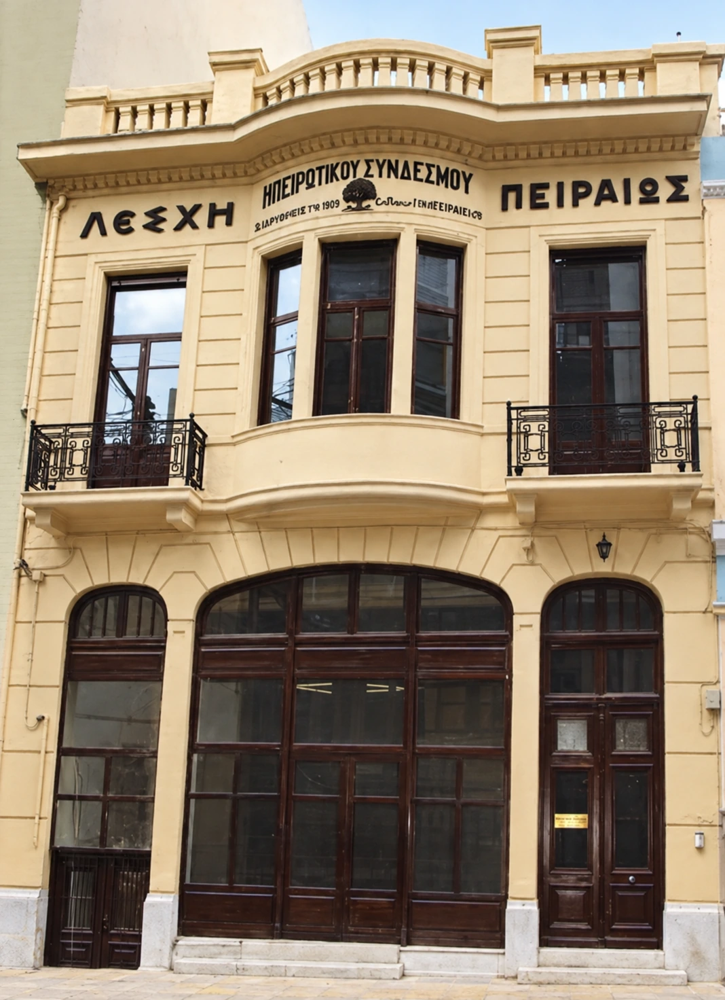

Χορός & μουσική
Τα χορευτικά μας τμήματα, η παραδοσιακή μουσική και οι εκδηλώσεις μας κρατούν ζωντανή την ηπειρώτικη παράδοση.
Δείτε περισσότερα →Η ιστορία μας, η Λέσχη μας, οι άνθρωποι που μας ενώνουν. Γνωρίστε τον Ηπειρωτικό Σύνδεσμο Πειραιώς και ανακαλύψτε την πολιτιστική μας πύλη στην Ήπειρο.
Στον Ηπειρωτικό Σύνδεσμο Πειραιώς κρατάμε ζωντανή την παράδοση, μέσα από τα χορευτικά μας τμήματα για όλες τις ηλικίες, τη μουσική, τη συλλογική δημιουργία, τη φιλία και τη χαρά της συμμετοχής.

Το νεοκλασικό κτήριο του Συνδέσμου, στον Πειραιά, αποτελεί εδώ και δεκαετίες σημείο αναφοράς για τους Ηπειρώτες και τους φίλους της Ηπείρου. Έναν χώρο συνάντησης, πολιτισμού και μνήμης, που φιλοξενεί τη ζωντανή πορεία του Συλλόγου μέσα στον χρόνο.
Δείτε περισσότερα για τη Λέσχη →Στα τμήματα παραδοσιακού χορού του Συνδέσμου, μικροί και μεγάλοι συναντιόμαστε μέσα από τη μουσική και τα βήματα της Ηπείρου. Μαθαίνουμε, γνωριζόμαστε και μοιραζόμαστε τη χαρά του χορού, σε μια ζεστή και χαρούμενη ατμόσφαιρα.
Γνωρίστε τα χορευτικά μας τμήματα →Για όλες τις ηλικίες · Με μουσική και καλή παρέα
Μέλη, διοικήσεις και υποστηρικτές συνδέουν τις διαφορετικές περιόδους της ζωής του Συνδέσμου. Γνωρίστε τους ανθρώπους του Διοικητικού Συμβουλίου και τους προέδρους της διαδρομής του.
Γνωρίστε περισσότερα για τον Σύνδεσμο →Τα χορευτικά μας τμήματα, η παραδοσιακή μουσική και οι εκδηλώσεις μας κρατούν ζωντανή την ηπειρώτικη παράδοση.
Δείτε περισσότερα →Μέσα από το αρχειακό και λαογραφικό μας υλικό αναδεικνύουμε την ιστορία και τον πολιτισμό της Ηπείρου.
Δείτε περισσότερα →Μια ζωντανή κοινότητα που ενώνει γενιές, με δράσεις, εκδηλώσεις και κοινές εμπειρίες.
Δείτε περισσότερα →Τόποι, μουσική, λαογραφία, τέχνες και δεκαπέντε αυτοτελή αφιερώματα. Εξερευνήστε την πολιτιστική πύλη του Συνδέσμου.
Εξερευνήστε την Ήπειρο →Για τη Λέσχη, την εγγραφή μελών και τη συμμετοχή στις δράσεις, ας ξεκινήσουμε με μια επικοινωνία.